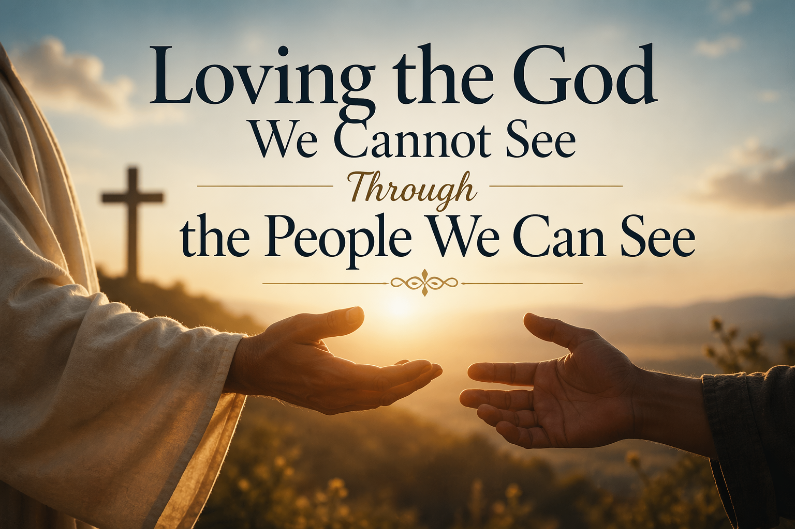

Home
About

Chapter 1: Loving God Became Easier Than Loving People
Chapter 2: When Church Hurt Teaches the Wrong Lessons
Chapter 3: Loving People Without Losing Wisdom
Chapter 4: Forgiveness Unlocks Supernatural Healing
Chapter 5: Seeing People Through the Eyes of Jesus
Chapter 6: Love as the Proof of God’s Presence